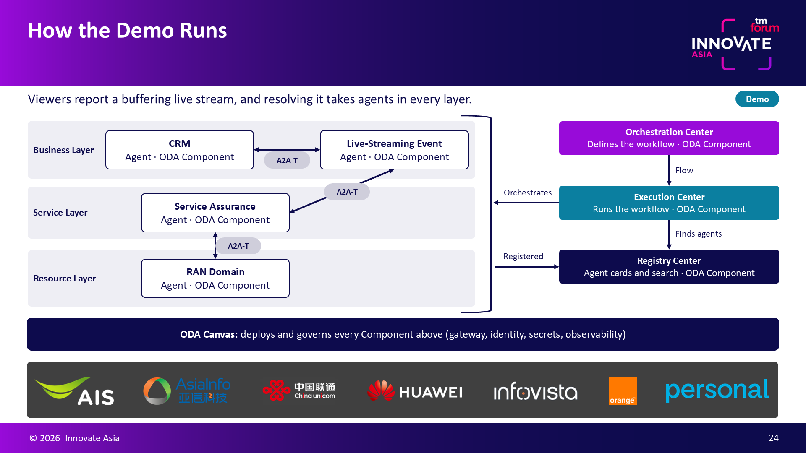

News · November 11, 2026 · by OpenAN
On November 17, 2026, Yijun Yu, OpenAN TSC Chair and AN Research Chief Expert at Huawei, and Lorenzo Cipriani, Principal Engineer at Huawei, will co-present the TM Forum Innovate Asia masterclass “Going beyond Level 4 autonomy with the AI-native ODA Canvas” at The Exchange. The session is chaired by Andy Tiller, EVP Products & Services at TM Forum, and hosted together with Mahima Khurana, Head of Innovation Hub, and Anshul Kumar, Innovation Hub Technical Lead.
The masterclass provides a deep dive into AI-driven Level 4+ autonomy delivered with the latest AI-native updates to TM Forum's Open Digital Architecture (ODA), demonstrating how high-value autonomous flows are built with agents and ODA Components working together in a secure, governed environment on the AI-native ODA Canvas. The ODA Canvas runs and governs the software, while OpenAN organizes the agents' work: agents from any vendor are packaged and deployed as standard ODA Components, the Registry Center catalogs and finds trusted agents, the Orchestration Center coordinates them across operational processes, and the A2A-T protocol lets them communicate in telecom terms. The agenda covers a brief introduction to AI-native ODA, an autonomous-flow demo in which OpenAN components on the ODA Canvas maintain high-quality service for video streamers in a marathon running race, and a hands-on session that configures the ODA Canvas to expose product catalog capabilities to an AI agent via MCP.

See the full session details on the TM Forum Innovate Asia agenda.